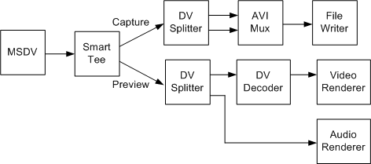

[The feature associated with this page, DirectShow, is a legacy feature. It has been superseded by MediaPlayer, IMFMediaEngine, and Audio/Video Capture in Media Foundation. Those features have been optimized for Windows 10 and Windows 11. Microsoft strongly recommends that new code use MediaPlayer, IMFMediaEngine and Audio/Video Capture in Media Foundation instead of DirectShow, when possible. Microsoft suggests that existing code that uses the legacy APIs be rewritten to use the new APIs if possible.]
A type-2 DV AVI file has two streams, one that contains DV video and another that contains audio. To capture a type-2 file while previewing, use the filter graph shown in the following diagram.

This graph is almost the same as the graph for type-1 capture (see Capture a Type-1 DV File). However, the capture stream goes through the DV Splitter filter before reaching the AVI Mux filter. The AVI Mux therefore receives two streams, an audio stream and a DV-encoded video stream.
Build this graph as follows:
ICaptureGraphBuilder2 *pBuilder; // Capture graph builder.
IBaseFilter *pDV; // DV capture filter (MSDV)
IBaseFilter *pAviMux // Avi Mux filter.
IBaseFilter *pDVSplit; // DV Splitter
// Initialize pDV (not shown).
// Create and initialize the Capture Graph Builder (not shown).
// Create the DV Splitter and add it to the filter graph.
hr = CoCreateInstance(CLSID_DVSplitter, 0, CLSCTX_INPROC_SERVER,
IID_IBaseFilter, reinterpret_cast<void**>)(&pDVSplit));
hr = pGraph->AddFilter(pDVSplit, L"DV Splitter");
// Create the file-writing section of the graph.
hr = pBuilder->SetOutputFileName(&MEDIASUBTYPE_Avi,
OLESTR("C:\\Example2.avi"), &pAviMux, 0);
// Connect the capture pin to the DV Splitter, and render one stream from
// the DV Splitter to the AVI Mux.
hr = pBuilder->RenderStream(&PIN_CATEGORY_CAPTURE, &MEDIATYPE_Interleaved,
pDV, pDVSplit, pAviMux);
// Render the other stream from the DV splitter to the AVI Mux.
hr = pBuilder->RenderStream(0, 0, pDVSplit, 0, pAviMux);
// Render the preview stream.
hr = pBuilder->RenderStream(&PIN_CATEGORY_PREVIEW, &MEDIATYPE_Interleaved,
pDV, 0, 0);
// Remember to release all interfaces.
Â
Â